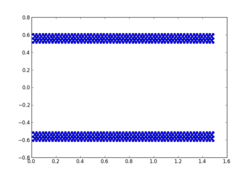
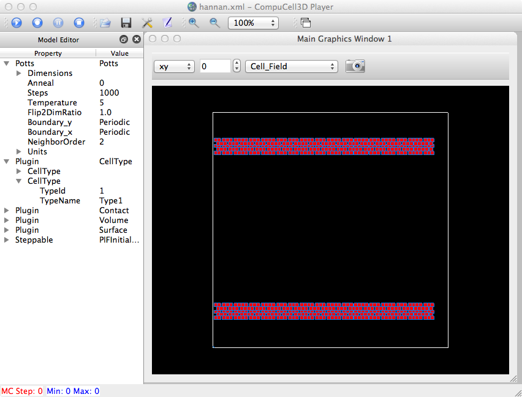

Do a simple plot of the cell-centered data first, for a sanity check (requires having matplotlib installed):
import sys from pylab import * argc = len(sys.argv) #print 'argc=',argc if argc < 2: print 'Usage: ',sys.argv[0],' <filename>' raise ValueError, 'Too few input args' idx=1 fname = sys.argv[idx] fp = open(fname, 'r') count=0 xpts = [] ypts = [] for line in fp: tmp = line.split() x = float(tmp[0]) y = float(tmp[1]) z = float(tmp[2]) rad = float(tmp[4]) xpts.append(x) ypts.append(y) if count < 20: print x,y,z,rad count += 1 plot(xpts,ypts,'o') show()

Here's a Python script (call it 'topiff.py') that is used to convert a user's cell-centered data to a .piff format:
'python topiff.py stage2.SMC.dat 200 200 1'
import sys
import string
from pylab import *
argc = len(sys.argv)
#print 'argc=',argc
if argc < 4:
print 'Usage: ',sys.argv[0],' filename lattice_xmax lattice_ymax cellRad'
raise ValueError, 'Too few input args'
idx=1
fname = sys.argv[idx]
idx += 1
lxmax = string.atoi(sys.argv[idx])
idx += 1
lymax = string.atoi(sys.argv[idx])
idx += 1
cellRad = string.atoi(sys.argv[idx])
fp = open(fname, 'r')
# cc3D lattice domain
#xmax = 100
#ymax = 100
lzmax = 1 # assume 2D
xmin = 0.0
xmax = 1.6
xrange = xmax - xmin
ymin = -0.8
ymax = 0.8
yrange = ymax - ymin
cellDiam = 2*cellRad
fpout = open('sample.piff', 'w')
line='0 Medium 0 %d 0 %d 0 %d\n' % (xmax-1,ymax-1,lzmax-1)
fpout.write(line)
xpts = []
ypts = []
count=0
for line in fp:
tmp = line.split()
x = float(tmp[0])
y = float(tmp[1])
z = float(tmp[2])
rad = float(tmp[4])
xpts.append(x)
ypts.append(y)
count += 1
# if count < 20:
if count > 0:
print x,y,z,rad
x1 = (x-xmin)/xrange * lxmax
x2 = x1 + cellDiam
y1 = (y-ymin)/yrange * lymax
y2 = y1 + cellDiam
line = '%d Type1 %d %d %d %d 0 0\n' % (count,x1,x2,y1,y2)
fpout.write(line)
#plot(xpts,ypts,'o')
#show()
fpout.close()
And if we copy/tweak the FoamCoarsening demo, we can view this in CC3D:
~/dev/Glazier/cc3d-3.6.1-3-13-12/Demos/Hannan$ more hannan.xml
<CompuCell3D>
<!-- The Potts section defines paramters that are used in the Metropolis algorithm-->
<!-- It also defines lattice parameters, flip neighbors and boundary conditions-->
<Potts>
<Dimensions x="200" y="200" z="1"/>
<Anneal>0</Anneal>
<Steps>1000</Steps>
<Temperature>5</Temperature>
<Flip2DimRatio>1.0</Flip2DimRatio>
<Boundary_y>Periodic</Boundary_y>
<Boundary_x>Periodic</Boundary_x>
<NeighborOrder>2</NeighborOrder>
</Potts>
<!--In Every CompuCell simulation you need to list all the cell types that you will be using-->
<!--This is done in the CellType Plugin - as shown below-->
<Plugin Name="CellType">
<CellType TypeName="Medium" TypeId="0"/>
<CellType TypeName="Type1" TypeId="1"/>
</Plugin>
<!--Contact Plugin calculates change in contact energy due to spin flip attempt -->
<!--You specify contact energies between cell types and how many levels of neighbors (Depth parameter) should be included in energy calculations -->
<!--Depth tells CompuCell the maximum distance - measured in pixels - up to which it should search for neighbors to be included in contact energy calculations-->
<Plugin Name="Contact">
<Energy Type1="Type1" Type2="Type1">3</Energy>
<Energy Type1="Medium" Type2="Medium">0</Energy>
<Energy Type1="Medium" Type2="Type1">0</Energy>
<NeighborOrder>3</NeighborOrder>
</Plugin>
<!--Volume plugin puts constraint on cell volume. You also need to include it when you want CompuCell to update volume of cells-->
<!--The stronget LambdaVolume therestrictive constraint -->
<!--Below LambdaVolume=0 which means ther is no constraint. However we use this plugin to get up-to-date volume information for every cell-->
<Plugin Name="Volume">
<TargetVolume>25</TargetVolume>
<LambdaVolume>0</LambdaVolume>
</Plugin>
<!-- Analogous to volume plugin-->
<Plugin Name="Surface">
<TargetSurface>17</TargetSurface>
<LambdaSurface>0</LambdaSurface>
</Plugin>
<!--This steppable initializes cells on the lattice. It reads text file - here it is foaminit2D- and based on this runs initialization-->
<!-- As an initializer it is called only once per simulation -->
<Steppable Type="PIFInitializer">
<PIFName>Demos/Hannan/sample.piff</PIFName>
</Steppable>
</CompuCell3D>
